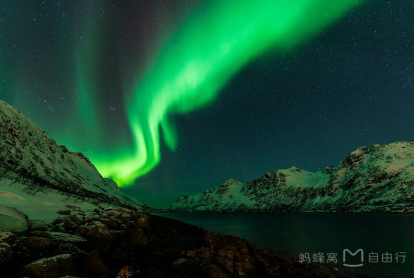
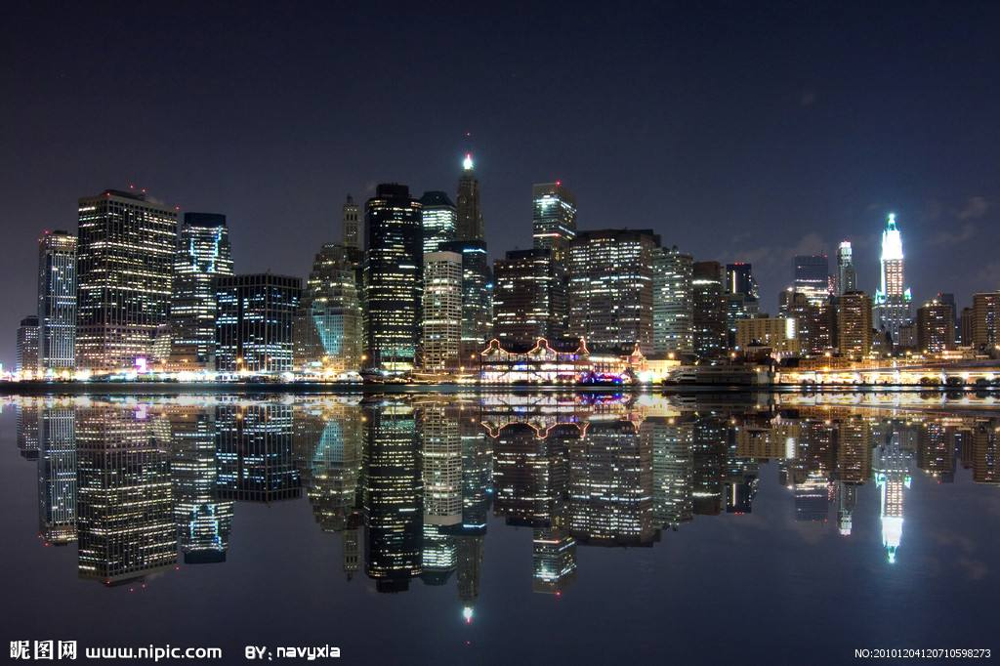
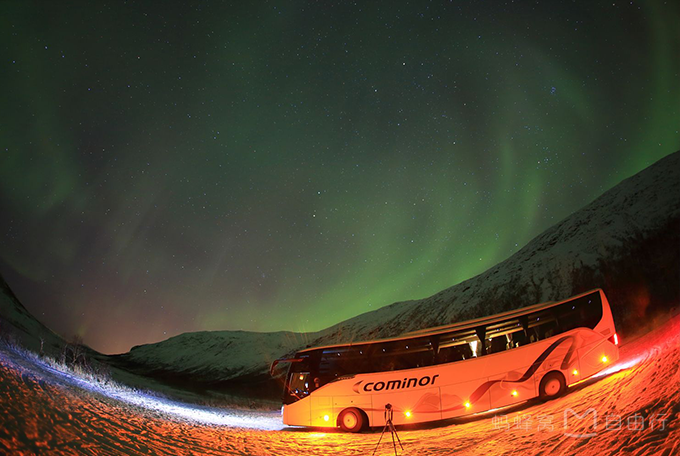

一、北欧哪些地方可以看到极光？
一般而言，北欧地区看极光的地方有三个，分别是瑞典北部（阿比斯库地区），芬兰北部（伊纳里地区）和挪威北部（以特罗姆瑟这座城市为中心）。
观测极光的最佳条件有3个：高纬度地区（最好接近或位于北极圈以内），远离城市光污染的郊区和晴朗无云的夜晚。而极光的出现也是有一定概率的，不是每个晴朗的晚上都有，所以我建议大家必须要在能看到极光的地区住至少三晚以上。

独一之旅 屈阳:
我是资深旅行定制师，深度游过30多个国家，已为超过200对客户提供定制服务，也希望有机会为您定制...
 等3050人咨询过TA


每个人心中都有一个看极光的梦，相比于北美阿拉斯加，北欧由于更多的直航航线，更完善的公共服务设施，吸引着越来越多的旅行者去看极光。作为专门负责“北欧极光主题线路”的定制师，在北欧诸国中，我尤其推荐北挪威这个性价比高，又可以花样看极光（和哈士奇一起看极光，乘坐极光游轮出海看极光）的地儿。由于极光的最佳的观赏日期就到2017年的3月，那么就赶紧跟我来选择最合适的看极光方式吧！
一般而言，北欧地区看极光的地方有三个，分别是瑞典北部（阿比斯库地区），芬兰北部（伊纳里地区）和挪威北部（以特罗姆瑟这座城市为中心）。
观测极光的最佳条件有3个：高纬度地区（最好接近或位于北极圈以内），远离城市光污染的郊区和晴朗无云的夜晚。而极光的出现也是有一定概率的，不是每个晴朗的晚上都有，所以我建议大家必须要在能看到极光的地区住至少三晚以上。
特罗姆瑟是北极圈内最大的城市，也是挪威最北的海港，这个城市交通便利，和多个北欧城市之间有直飞航线，且旅游设施完善，酒店和极光团的选择也多。和其他北欧地区相比，特罗姆瑟的优势如下：
1.温度：特罗姆瑟位于海边，受大西洋暖流影响，它会比芬兰北部和瑞典北部暖和,拿11.23日的气温举例来说，特罗姆瑟是2至3度，而北京市-7至2度，同日期的瑞典北部和芬兰北部最高气温才-2度。
2.气象条件：又因为处于沿海地带暖流寒流相聚，天气千变万化，相对而言更容易出现晴天。而瑞典北部和芬兰北部是内陆地区，劲风大雪、阴天较多。
3.地理位置：挪威北部比瑞典北部和芬兰北部的纬度更高，极光活动更加频繁。以上因素使得在挪威北部看到极光的概率大大增加。
极光团按照交通方式可分为三种：雪地徒步极光团，汽车极光团以及极光游轮。
1.雪地徒步极光团：顾名思义是徒步走到极光观测点。在市区集合后，乘车来到郊区，一位挪威帅哥会带着您在雪地徒步约20分钟，他会给每个人发专业的雪地鞋和手电筒，不用担心天黑路滑。
终点是提前搭建好的极光观测站，大家可以先在帐篷里面喝热饮，休息，等待极光出现即可。

2.极光游轮：乘坐游轮追逐极光，会有与陆上看极光完全不同的全新体验。远离灯火通明的喧嚣城市，而且大洋上有的时候容易出现晴天，所以可以更好地观测极光哦。
同时，这种游轮上一般都配有向导（没有中文讲解，但讲解的时候会放视频，很容易看懂，还挺有趣哒）讲解关于北极光的神话故事和极光的原理，很适合家庭旅行者。
3.汽车极光团：这种极光团的移动性很好，很适合怕冷且体能一般的人哦。
除了看极光，白天还是有许多事情可以做的，下面就是根据我自己多次进入特罗姆瑟的经验，给大家推荐的特罗姆瑟必体验的景点哦。
【特罗姆瑟必体验之特罗姆瑟图书馆】站在这座图书馆之前，仿佛看到了一座来自未来的建筑。具有现代感的流线型屋顶勾勒出利落的线条，大面积的落地玻璃窗使得整个图书馆晶莹剔透。
北极圈冬季长时间陷于黑暗当中，玻璃墙带来的阳光让这座处于极地的图书馆顿时温暖了许多。哪怕只是路过，你也会忍不住想进来待上一会儿。

【特罗姆瑟必体验之极地大教堂】 北极大教堂就在特罗姆瑟大桥南岸的特罗姆瑟达伦山谷上，经过特罗姆瑟就能很明显看到大教堂。特别简单的外表，
但是给人一种神圣的感觉，纯白色的外观也很适合拍照，它白色三角形和北欧最大的彩色玻璃窗的造型实在是太让人无法忽视。
在国内旅游、出境旅游市场已全部
实现了计算机联网操作。网络具备
了专业的旅游产品销售体系，在同
行业中更具市场领先优势。
联系我们
微企点网址 : http://www.zhouxq.me
QQ交流群：2921188500
支持邮箱：18928498593@163.com/p>
新浪微博：纪宁希